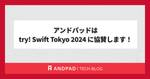

ANDPAD Tech Blog
https://tech.andpad.co.jp/
ANDPAD の開発部からのお知らせやエンジニアリングに関する話題を発信するTech Blog です。
フィード

Go 1.22 の Vet 変更点について 3
3
ANDPAD Tech Blog
こんにちは、バックエンドエンジニアをしています武山 (bushiyama) です。 ANDPADボードという稼働管理アプリのバックエンドを担当しています。 andpad.jp これはなに Go 1.22 リリースパーティにて登壇発表した内容を、実例コードを添えてあらためて起稿したものです。 当日の資料は別途こちらを参照ください。 speakerdeck.com 発表したこと Go 1.22 のお祝いということでリリースノートのTool関連から、Vet周りの更新内容について発表してきました。 おさらい まずおさらいからということで、Vetとはなにか。 pkg.go.dev 上記ドキュメント Ov…
6日前

アンドパッドは try! Swift Tokyo 2024 に協賛します！ 1
ANDPAD Tech Blog
アンドパッドの栗山です。テックブログを担当するのは久しぶりです。 今回は try! Swift Tokyo というイベントをご紹介します。 3/22 (金) 〜 3/24 (日) の3日間の日程で、 try! Swift Tokyo 2024 が開催されます！ tryswift.jp アンドパッドは、今回 SILVER スポンサーとして協賛させていただきます！ 紹介ありがとうございます！アンドパッドは Siver スポンサーとして #tryswift Tokyo 2024 に協賛しています！参加特典バックにアンドパッドでは初となる Tech Book を入れています！ ぜひご覧ください htt…
9日前

プロダクト開発を行いながらOSS活動も緩くやる
ANDPAD Tech Blog
ANDPADボード プロダクトテックリードの土屋(tomtwinkle)です 先日CHIYODA Tech #3 にLT枠で参加してきました！ CHIYODA Techとは、千代田区にオフィスを構える企業が運営・登壇するLTイベントです。 今回は弊社9Fのイベントスペースで開催させていただきました！
17日前
Ruby 3.3 リリースパーティを STORES さんと共催し、大盛況に終わりました！ #ruby33party
ANDPAD Tech Blog
こんにちは、 id:sezemi です。 あと 3 週間ほどで入社から半年が経とうとしていて、念願の有給付与まであと少しとなりました。 待ち遠しい！ ちなみにアンドパッドには、有給付与までに 3 日間の入社時特別休暇があります。 インフルエンザやらコロナやらが流行っている中、この休暇があることで、とても助かっています。 さて、前年の 12/25 に Ruby 3.3 がリリースされました 🎉🎉🎉🎉🎉🎉 8888888 www.ruby-lang.org これを祝ってリリースパーティーを STORES さんと共催しましたので、今日はその模様をお届けします！ andpad.connpass.com…
1ヶ月前
CREがエンジニアリングで業務効率化をおこなった話 〜Datadogから異常に重いリクエスト数を自動集計〜
ANDPAD Tech Blog
こんにちは。CREの山本です。 今回はCREがエンジニアリングで業務効率化をおこなった話について書こうと思います！ 私は誰か 今回初めてブログを書きますので簡単に自己紹介させてください！ 2022年にアンドパッドへ入社し約1年半の間、ANDPAD施工管理を担当しています。 前職では自社開発のデータベースの監査アプリケーションやデータベース移行補助ツールなどのテクニカルサポートをおこなっていました。 常日頃「プロダクトと顧客」の間に立つものとして、課題に対して技術的に向き合っています。 大工一筋の父親のもとで育ちましたので、私なりに建築・建設業界の役に立ちたいとアンドパッドで充実した日々と共に業…
1ヶ月前
Ruby のメモリ使用量問題を調査し upstream で解決していただいた話
ANDPAD Tech Blog
はじめに こんにちは。リアーキテクティングチームの髙橋と申します。 この記事では、アンドパッドの施工管理サービスで利用している Ruby をバージョンアップしたときに発生したメモリ使用量の問題の発生から解決までをお話しします。 Ruby のバージョンアップ（3.0 -> 3.2） アンドパッドでは昨年 2023 に、施工管理サービスで利用している Ruby を 3.0 から 3.2 にバージョンアップしました。 バージョンアップ自体は過去に確立済みの手法（詳しくは過去記事をご参照ください）により、粛々と進められリリースされました。 ところがこのリリースから数日後、とある問題が発覚しました。 メ…
1ヶ月前
Google Chrome+QualityForwardでテストケースを多言語化
ANDPAD Tech Blog
ごあいさつ アンドパッドのQualityControlの冨士川です。 入社して2年半経過し、現在はQCチームのリーダーやっています。 道の駅をめぐることにハマっていて写真は千葉県館山市の道の駅「“渚の駅” たてやま」の「さかなクンギャラリー」で撮った写真です。魚魚魚～！ ※QualityControlについては弊社のTech Blogをお読みください この記事の目的 皆さん、海外メンバーと開発する時にテストケースの翻訳はどうしていますか？ 「Google Chrome」とテスト管理ツール「QualityForward」を組み合わせて使ったところ、 簡単にテストケースを多言語化できたのでご紹介し…
1ヶ月前
アンドパッドのデータ組織の過去・現在・未来
ANDPAD Tech Blog
はじめに こんにちは、データ部で部長をやっている土居です。 早いものでアンドパッドに入社して2年が過ぎようとしています。 体感としては前職の5年分くらいの密度のような感じがしており、今もなお刺激 で ワクワクする日々を過ごしています。 今日はアンドパッドのデータ組織の成長過程、現在の状況、そして未来に向けた話について、皆さんにもそのワクワクの一端をお伝えできればと考えています。 過去①：開墾期（〜2021年） 私は庭をいじるのが好きなので、以降は庭造りになぞらえて話をしていきたいと思います。 当社は建築・建設業界を対象としたバーティカルSaaS企業です。上流から下流にかけて、あらゆる種類のデー…
2ヶ月前
Product Engineer Night #2 に参加してきた
ANDPAD Tech Blog
こんにちは、採用広報の id:sezemi です。 アンダーニンジャ最新刊 12 巻の 2/6 リリースに備え、復習に余念のない日々を過ごしています。 でも、今でも理解ができていないところがあり、ネタバレサイトを見に行こうか悩んでいます。 さて、先月 1/17 に Product Engineer Night #2 〜 Domain への Deep Dive！〜 が開催され、アンドパッドからはテックリードであり、創業メンバーでもある 金近 歩 (@KanechikaAyumu) が登壇しました。 product-engineer.connpass.com この記事ではその模様をレポートします！…
2ヶ月前
QCは開発の中で何をする？～作るプロセスの中にいる、作らない人～
ANDPAD Tech Blog
こんにちは、アンドパッドQCの安室です。 アンドパッドに入社してから早いものでもうすぐ3年になります。 長いような短いような…アンドパッドという環境は非常に濃密で、この3年も一瞬で過ぎてしまったように感じます。 半年ちょっと前、アンドパッドのQCはどういう組織？というテーマで紹介記事を書きましたが、今回は「QCって開発の中で何する人なの？」という点についてもう少し具体的に書いてみようと思います。 なんでQAではなくQCなの？ 全体の組織としてはどういう位置づけなの？ という点については、上記のブログをご参照いただければと思います。 アンドパッドQCの役割 QCは「Quality Control…
2ヶ月前
生成AI活用プロジェクト推進時のポイント
ANDPAD Tech Blog
こんにちは！アンドパッドのデータ部で機械学習エンジニアを担当している谷澤です！ 最近は機械学習パイプラインの開発やプロダクトへの機械学習導入の概念実証（PoC）に携わっています。 今回は2023年のユーキャン新語・流行語トップテンにもなった生成AIに関するアンドパッドの取り組みについてお届けしたいと思います。 なお、本プロジェクトで開発した機能はまだ世の中に出ていないため、公開しても差し支えない内容のみの記載となることをご了承ください。 アンドパッドは生成AIに取り組んでいます CEO稲田のSlackチャンネルでの一コマ 2023年の1Qに起きた出来事を紹介します。CEOの稲田がSlackで生…
2ヶ月前
新規プロダクトの開発に Nuxt 3 を採用して良かったこと
ANDPAD Tech Blog
ANDPADフロントエンドエンジニアの小泉です。 昨年の夏頃、担当したプロダクトで新規リポジトリでの開発を立ち上げる機会があり、Nuxt 3 を用いて構築を行いました。 アップデートではなく新規で Nuxt 3 サイトを構築するのは業務としては初めての経験だったのですが、Vue 3・Nuxt 3 の様々な機能によって、型安全な状態を保ったまま快適な開発を進められ、かつ3ページの全体実装を約7営業日で形にすることができました。 この記事では、「いま新規サービスのゼロからの立ち上げにNuxt 3を選択するとどんな嬉しいポイントがあるのか」という実例をご紹介できればと思います。 担当したプロダクトに…
2ヶ月前
2023年から始めたSREチームの情報発信とプロポーザル供養の話
ANDPAD Tech Blog
こんにちは。SREチームの吉澤（写真左）です。 この記事では、今年2023年にアンドパッドSREチームが情報発信を強化するために行った活動と、プロポーザルが不採択になり続けるなかで、少しずつ情報発信できるようになってきた現状をご紹介します。私たちと同様、採用強化のための情報発信に苦戦しているSRE・インフラチームの参考になれば幸いです。 採用のための情報発信強化のきっかけ 私は、今年の3月にアンドパッドに入社しました。アンドパッドとしては久々のSRE採用だったようです。 入社後に色々話を聞いていくと、SREチームは少数精鋭でアンドパッドのマルチプロダクト開発を支えていたものの、行うべきタスクに…
3ヶ月前
開発現場の貢献実感のためにできること
ANDPAD Tech Blog
はじめに この記事はANDPAD Advent Calendar 2023 25日目の記事です。 こんにちは、アンドパッド代表の稲田です。 今回は、アンドパッドが取り組む、2024年の業界課題と、PdM / エンジニア / デザイナー / QA / CRE など開発チームに感じてほしい、アンドパッドの提供価値と、貢献実感についてのお話です。 少しでも、社会課題解決に貢献できるワクワクをお伝えできたらな、と思います。 アンドパッドが取り組む建築・建設業界 建築・建設業界は、 50 兆円を超える巨大な市場でありながら、生産性が低い産業の一つと言われています*1。 また、労働者の高齢化や、新規入職者…
3ヶ月前
改行コードから学んだ意図しないデータが生成されないようにする工夫
ANDPAD Tech Blog
この記事はANDPAD Advent Calendar 2023 23日目の記事です。 こんにちは、motokikando です! アンドパッドに1期生で新卒で入社してから早いもので、9ヶ月が経ちました! 7月からプロダクトチームの1つであるANDPAD黒板チームにjoinし 、 現在サーバーサイドをメインに業務をしています。 今回はその中で起こった、見た目上、同じ2つの黒板ができてしまうという謎の現象を解消し、そこから学んだ知見についてご紹介します! 改行コードとは? 本題に入る前に改行コードの種類についてご紹介します。 改行コードは文字通り、テキスト内で改行を表すための特殊な文字コードのこ…
3ヶ月前
チームの公用語を英語にした話 A story about making English our team's official language
ANDPAD Tech Blog
See below for the English version. この記事はANDPAD Advent Calendar 2023 22日目の記事です。 こんにちは、リアーキテクティングチームの白土(@kei_s)です。今回は、我々のチームの公用語を英語にしたお話のご紹介です。 リアーキテクティングチームとは ANDPADシステムでの複数のドメインに横断した問題に対応するため、「リアーキテクティングチーム（略称: リアーキチーム）」という名前の専任チームを組織し開発課題に対応しています。現在主に Rails アプリケーションに関連する改善を行っています。ブログやイベントで取り組みをいくつか…
3ヶ月前
Ruby フルタイムコミッタの仕事報告 2023年Q4
ANDPAD Tech Blog
こんにちは hsbt です。RubyConf Taiwan 2023 の登壇から帰国して後はバルダーズ・ゲート3をプレイして年を越すのみ...! とは行かず、Ruby 3.3.0 のリリースに向けて最後の準備作業をしている真っ最中です。 さて、今回はANDPAD Advent Calendar 2023の20日目として、今年1年私がプログラミング言語 Ruby の開発のために手を動かしてきた内容の中からテックブログやカンファレンスで発表していない内容をまとめてご紹介します。 default gems から bundled gems への変更の目的 私は数年前から Ruby に元々添付されていた…
3ヶ月前
スタートアップの舞台裏、アンドパッドに新卒一期生として入社して感じたこと
ANDPAD Tech Blog
はじめに はじめまして。株式会社アンドパッドでソフトウェアエンジニアをしているハセガワカンタです。 アドベントカレンダーの季節がやってきたので、アンドパッドに新卒で入社して現在まで、何をしてきて何を感じたのかを書こうと思います。 これは ANDPAD Advent Calendar 2023 19日目の記事です。 qiita.com 誰？ 軽く自己紹介をしておきます。 名古屋生まれ名古屋育ちで今年の春に上京してきましたハセガワカンタです。東京のかつやに入ったら味噌カツ丼がメニューになくてカルチャーショックを受けました。 学生時代は文系学部だったのですが、コロナ禍のおうち時間を活用して独学でプロ…
3ヶ月前
目標を変えたらモチベーションが上がり組織の課題解決にも繋がった話
ANDPAD Tech Blog
こんにちは。CREの東峰（とうみね）です。 今回はANDPAD Advent Calendar 2023 18日目の記事として、私が担当しているCREの施工管理チーム*1の目標の変化とその理由について書こうと思います！ ANDPADのCREがどんなことをやっているのかは過去の記事に詳しく書いています。ぜひ読んでみてください。 アンドパッドのCREチームを紹介します！ - ANDPAD Tech Blog 私は誰か 今までの目標と変えた目標 今までの目標 変えた目標 見えてきた課題と達成したかったこと CREの成果目標に対する課題 目標設定上の課題 目標を変えることで達成したかったこと 目標を変…
3ヶ月前
新卒から始める パフォーマンスを意識したActiveRecordの使い方
ANDPAD Tech Blog
こんにちは！SWEの高橋（@thehighhigh）です。 この記事は ANDPAD Advent Calendar 2023の 17日目の記事です。 今年新卒として入社し、研修を終えたのちに、現在は「ANDPAD図面」というプロダクトのサーバーサイドを主に担当しています。 配属から早くも半年が経過し、プロダクトと自身の成長を実感しながら、日々楽しく開発に取り組んでいます！ そんなANDPAD図面ですが、サーバーサイドは主にRuby on Railsで構築されています。 図面上に書き込みを入れることができたり、様々なオブジェクトを置くことができるというプロダクトの性質上、使われ方によっては非常…
3ヶ月前
モバイルアプリのデザイナーの悩みと6つの武器
ANDPAD Tech Blog
こんにちは！ アンドパッドでプロダクトデザイナーをしているエモトです。反抗期が始まった小６の長男、ゲームとサッカーばかりしている小２の次男の子育てに奮闘しながらも、日々デザインに本気で向き合っています！ この記事は ANDPAD Advent Calendar 2023 16日目の記事です。 アンドパッドでモバイルアプリをデザインする中での悩みや、その悩みに対してどのように向き合っているのかをお話しできればと思います。 モバイルアプリのデザイン、ここが悩ましい！ 画面内が要素で埋まってしまい、これ以上追加できない！ iOSとAndroidでデザイン思想が異なる ANDPADらしさとANDPAD…
3ヶ月前
障害に前向きに向き合っていきたい〜「ポストモーテムから学ぶ会」誕生秘話〜
ANDPAD Tech Blog
こんにちは、お久しぶりです！CREのmayuzo（@nanaka1103）です。 昨年末から産休・育休に入っていたため、お久しぶりの投稿となりました。今は子育てと仕事を両立させたいと頑張っていますが、覚悟はしていたものの大変ですね。先人達には頭が上がりません。 さて、今回はアドベントカレンダーへの寄稿として、アンドパッドのCREが障害に向き合っている取り組みについて書いていこうと思います！ 障害対応におけるCREの役割 アンドパッドでの障害対応の流れ 振り返りとポストモーテム ポストモーテムから学ぶ会 開催の形式 CREがこの会を主導する意味 実際効果はあったのか （余談）会の名前に込められた…
3ヶ月前
デザインシステム「Tsukuri」でテキストフィールドのコンポーネント設計に挑戦した話
ANDPAD Tech Blog
こんにちは。株式会社アンドパッドでプロダクトデザイナーをしている @zouzei8to10 です。 私は、今年の6月入社のため、アドベントカレンダーもテックブログも初めてとなります。どうぞよろしくお願いします！ これはアンドパッドの2023年のアドベントカレンダーの13日目の記事です。 他の方の記事については下記のページからぜひご覧ください！ qiita.com 今回の記事ではANDPADで構築・運用しているデザインシステムの「Tsukuri（ツクリ）」にテキストフィールド（＝入力フォームなどで利用する1行のテキストの編集を可能にするテキスト・コンポーネント）のコンポーネントを追加するために行…
3ヶ月前
FirestoreをBigQueryに連携して長期間のPITRを実現した話
ANDPAD Tech Blog
この記事はANDPAD Advent Calendar 2023の11日目の記事です。 はじめに こんにちは、SWEの西です。普段はANDPADチャットを開発するチャットチームのメンバーとして働いています。今回はANDPADチャットのデータベースとして使われているFirestoreについてお話します。 FirestoreはGCPが提供するフルマネージドのNoSQL製品です。フルマネージドNoSQLのもう一つの代表例にAWSのDynamoDBがありますね。Firestoreにしかない特徴の一つとして、データの更新をリアルタイムでクライアントに反映できるというものがあります。この特徴はチャット機能…
4ヶ月前
Next.js で react-dropzone を使ってファイルアップローダーを作ってみよう
ANDPAD Tech Blog
この記事は ANDPAD Advent Calendar 2023 の 10日目の記事です。 どうもこんにちは。フロントエンドエンジニアの蓮子です。今回は、Next.js におけるドラッグ & ドロップできるファイルアップローダーの作り方の紹介です。 使用するライブラリは react-dropzone です。「Next.js ファイルアップロード ドラッグアンドドロップ」とググると数多く紹介されていることから、利用者が多くメジャーなものな気がします。 とはいえ、いい感じのデモが見つかりづらかったので、自分で作って記事にしてみようと思いました。 今回作りたいもの ファイルアップローダー 今回のゴ…
4ヶ月前
Debian12 bookwormの更新でハマった件もしくはAlpine Linuxからdistrolessへの乗り換え時の注意点
ANDPAD Tech Blog
こんにちは もしくは こんばんわ！ ANDPADボード プロダクトテックリードの原田 土屋(tomtwinkle)です 最近めでたく戸籍が代わり名字がリネームされました この記事はDebian12 bookwormが正式リリースされ、Debian11 Bullseyeが今までの流れでいうと来年辺りEOLになりそうな雰囲気なので今のうちに切り替えておこうと奮闘した記録とAlpine Linuxからdistrolessに変更したらKubernetesのpreStopが上手く動かなくなった件の対応をした記録の合せ技です。
4ヶ月前
楽しさ満載！レゴで学ぶスクラム研修
ANDPAD Tech Blog
こんにちは、SWEの大西です。この記事は ANDPAD Advent Calendar 2023 の 8日目の記事です。 今回は、レゴを使用してスクラムを体験する研修を開催しましたので、研修の内容について紹介したいと思います。この研修はワイクル株式会社に依頼して「レゴ®ではじめるスクラム」を実施しています。 なぜスクラムの研修を開催したのか？ アンドパッドでは建設業界全体のデジタル化を推進するミッションを掲げており、施工管理・チャット・図面・検査などの多岐にわたるプロダクトを開発しています。各プロダクトごとに運用方法は異なりますが、多くのプロダクトは独自の複雑な課題に取り組むためにスクラムを取…
4ヶ月前
役割における仕事の性質の変化
ANDPAD Tech Blog
この記事は ANDPAD Advent Calendar 2023 の 7日目の記事です。 1年ぶりの登場となります、後藤です。 全然こちらではネタを書かずに1年経ってしましました。おかげさまで毎日忙しく組織課題に立ち向かっています。 そんな中で今日は少し一般論的な話にもなりますが役割と責任みたいなネタを整理したものを書いてみようと思います。 ResponsibilityとAccountabilityで語られるような話です。 だいぶ前の話なんですが、社外のCTOの方とお話しをさせていただく機会があった時に似た話になったのと、EMFMというpodcastの話とつながって、そういうことかーとなった…
4ヶ月前
デザインシステム「Tsukuri」の立ち上げから現在まで〜取り組みとその成果〜
ANDPAD Tech Blog
アンドパッドでプロダクトデザイナーをしている @sizucca です。 以前、デザインシステムの専任エンジニアが、ANDPAD のデザインシステム「Tsukuri」に関する技術的な記事を連載形式で執筆しましたが、今回はデザイナーの視点から、デザインシステムの立ち上げから現在に至るまでの取り組みと、その成果を振り返りたいと思います。 ※現時点（2023年12月）において、デザインシステム「Tsukuri」は、自社で開発・運営しているSaaSプロダクトである「ANDPAD」を主な対象範囲としています。 デザインシステム立ち上げの背景 1. 言語化されたルールやガイドラインの不足 2. 独自ルールや…
4ヶ月前
Go Conference mini 2023 Winter IN KYOTOでLTしてきました！
ANDPAD Tech Blog
こんにちは、SWEの小島です。 この記事は ANDPAD Advent Calendar 2023 の 5日目の記事です。 先日開催されたGo Confarence maini in KYOTOに参加し、LTをしてきました！この記事はLTの紹介とカンファレンスに参加した感想になります。 Go Conference mini 2023 Winter IN KYOTOについて kyotogo.connpass.com Go Conference miniは全国各地のGo言語コミュニティが企画・運営を行っており、去年は仙台にて開催されており今年は京都にて開催されました。 LTについて 自分は「Go …
4ヶ月前